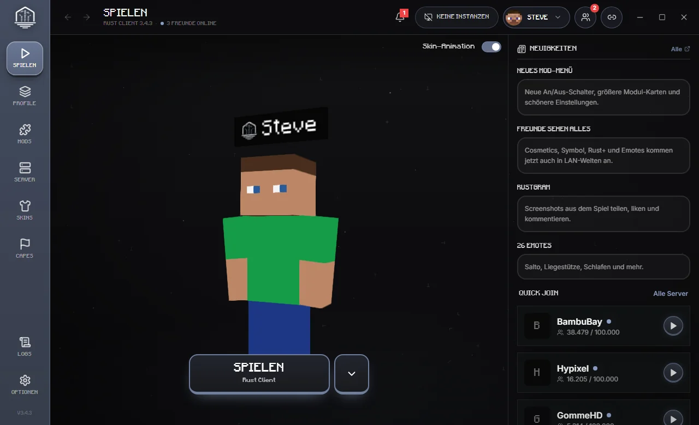
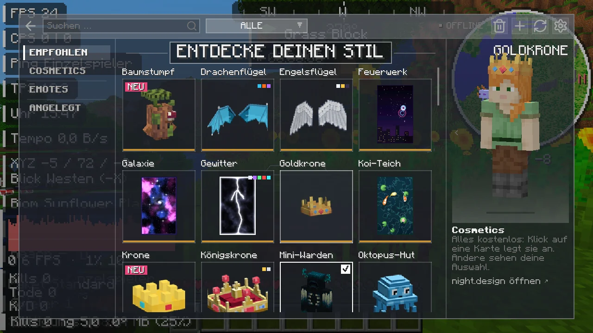
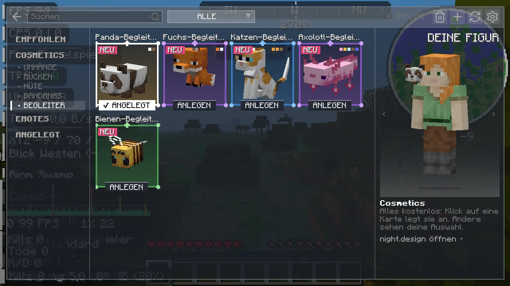
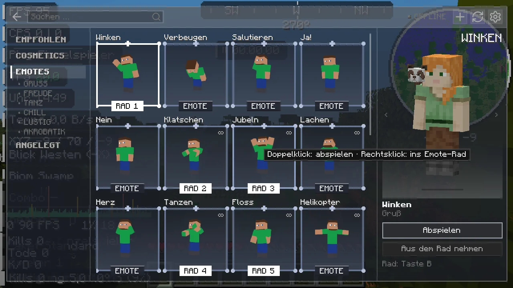
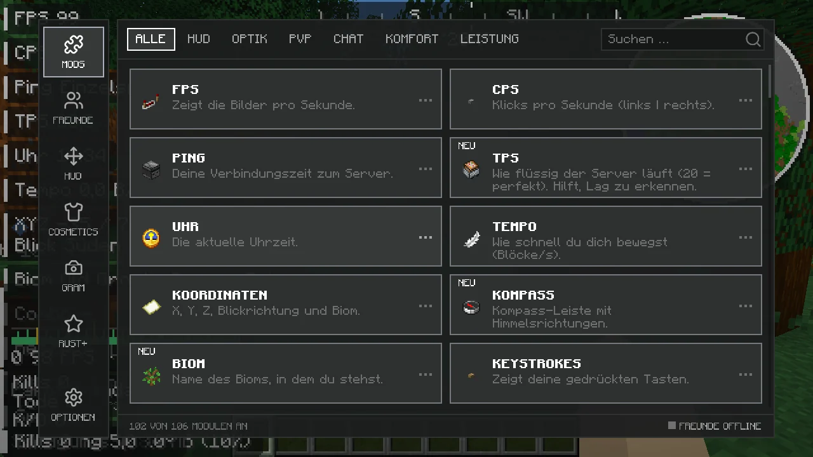
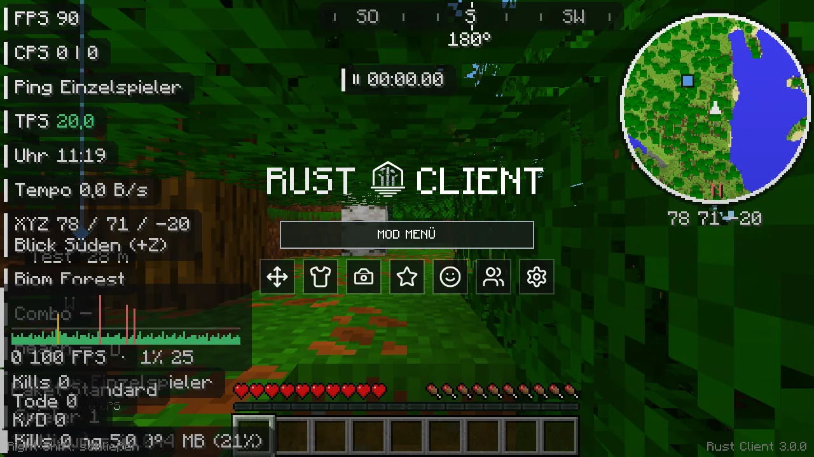

Der Minecraft-Client, der einfach läuft.
Launcher und Mod in einem: mehr FPS, Cosmetics, Emotes, Freunde und RustGram. Kostenlos für alle.

Maus bewegen zum DrehenAlles im Client. Ohne Extra-Mods.
Alles, was andere Rust-Client-Spieler betrifft, sehen sie auch: Cosmetics, Emotes, Namens-Stile und deine Beiträge.
Cosmetics in 3D. Alle kostenlos.
Umhänge, Flügel, Hüte und echte Minecraft-Tiere als Begleiter – andere Rust-Client-Spieler sehen alles. Probier die Umhänge direkt hier aus.
Such dir deinen Umhang aus.
Animierte HD-Umhänge mit Leucht-Effekten, dazu Community-Capes: Lade im Launcher unter Capes dein eigenes hoch, alle anderen können es speichern und anlegen.
So sieht's im Spiel aus.
Neues Cosmetics-Menü im Shop-Stil, Emotes mit Vorschau, echte Begleiter-Tiere und ein schlichtes Mod-Menü in Grau.





Der Launcher. Schau rein.
Ein Klick auf Spielen: Minecraft, Fabric, die Rust-Client-Mod und das Leistungspaket werden automatisch eingerichtet.
Neu im Client.
Jedes neue Feature landet hier, sobald es fertig ist.
Jetzt loslegen.
Am einfachsten mit dem Launcher. Wer schon einen anderen Launcher nutzt, nimmt nur die Mod.
Rust Client Launcher
Für Windows. Installiert Minecraft 1.21.11, Fabric und die Mod, hält alles aktuell und startet mit einem Klick.
- ZIP herunterladen und entpacken.
- Setup starten und installieren.
- Mit deinem Microsoft-Konto anmelden, Spielen klicken.
Rust-Client-Launcher-2.1.0.zip · 13,8 MB
Nur die Mod
Für Prism, Modrinth und andere Launcher. Für Minecraft 1.21.4 bis 1.21.11, braucht Fabric Loader und Fabric API. Im ZIP liegt für jede Version die passende Datei.
- ZIP entpacken.
- Die .jar in den Ordner „mods“ legen.
- Im Spiel öffnet Rechte Shift das Menü.
Rust-Client-Mod-2.0.0.zip · 10,5 MB
Du brauchst Minecraft: Java Edition. Windows SmartScreen kann vor dem unsignierten Setup warnen: „Weitere Informationen“, dann „Trotzdem ausführen“.